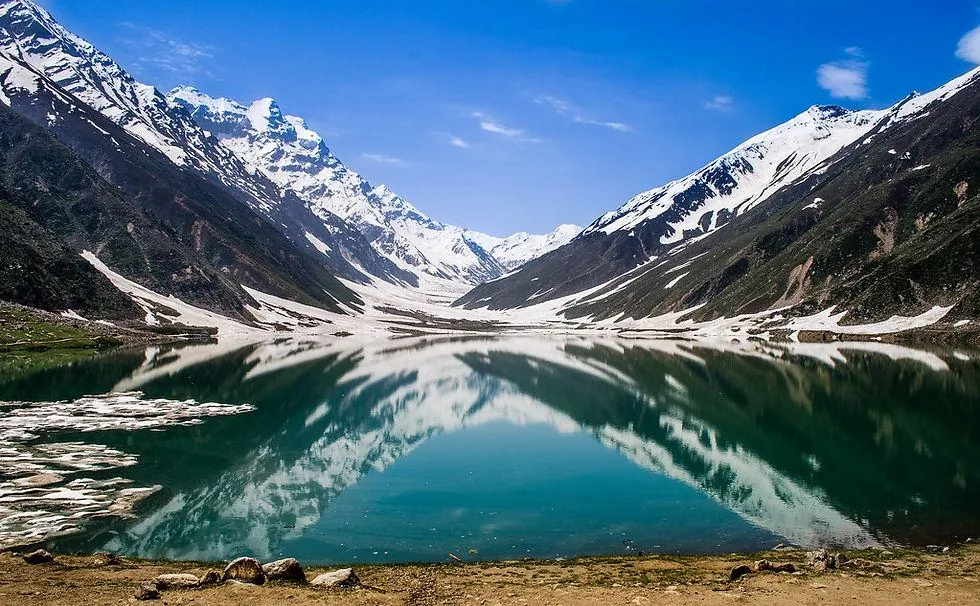

Lake Saif-ul-Malook sits in a dramatic mountain setting near Naran and is one of the region’s signature excursions. Its appearance changes with the light and weather, and access can be affected by snow, rain or road conditions. Treat this as a nature trip that needs a flexible schedule, not a fixed-time attraction.
What to see and how to plan
- 1
1. Start from Naran
Naran is the usual base for arranging the excursion. Ask local operators about the current route, vehicle type, expected journey time and return arrangements.
- 2
2. Choose the right season carefully
The main visiting period is generally during the warmer months, but opening and access dates vary year to year. Snow and changing weather can affect the route.
- 3
3. Allow enough time
Do not squeeze the lake into an already rushed travel day. Build in time for the journey, weather delays, a walk around suitable areas and the return.
- 4
4. Dress for mountain weather
Bring a warm layer, windproof or waterproof jacket, sturdy shoes, sun protection and drinking water. Conditions beside the lake can feel colder than in town.
- 5
5. Respect the water and terrain
Cold water, unstable edges and sudden weather make swimming or approaching steep banks risky. Follow local safety instructions and stay within safe areas.
- 6
6. Photograph the landscape thoughtfully
Early or late light may be attractive, but visibility is weather-dependent. Keep your camera secure and do not step onto fragile ground for a shot.
- 7
7. Ask before booking local transport
Confirm whether the quoted price includes waiting time, return travel and any additional charges. Agree on the pickup point before leaving.
- 8
8. Keep valuables and waste secure
Use a small day bag, take your rubbish back and avoid leaving food scraps that attract animals.
- 9
9. Prepare for limited facilities
Facilities may be basic or seasonal. Carry essentials with you and do not assume card payments or mobile coverage will work everywhere.
- 10
10. Keep a backup plan
If weather or access is poor, enjoy Naran and the surrounding valley instead. A safe alternative is better than forcing a mountain excursion.
Practical travel tips
- Confirm current access with a reliable local source on the day.
- Never enter the lake or fast-flowing water without verified safe conditions.
- Carry cash, water, snacks and a fully charged phone.
- Agree on the return time and transport cost before setting off.
Explore with Past Enlighten
Ask about route options, dates and what is included. Confirm the price and itinerary in writing before you book.
Continue planning
Travel conditions, access, schedules and prices can change. Confirm current details locally before departure.